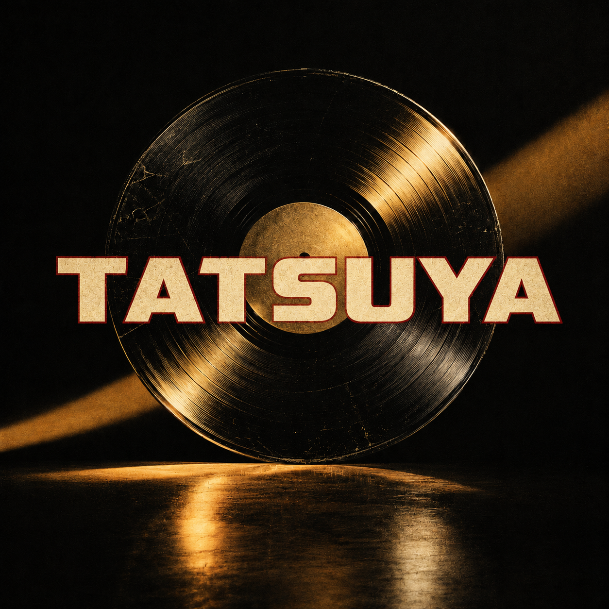

Oh-No Corp RECORDS
TATSUYA
大野物産株式会社
LYRICS
Yo, 達矢
One lost ball, one new plan
しくじりさえも make you the man
Turnover to Turnaround
Let’s run it back
大学語学の同じクラス
英語の授業は barely passed
出席必須の厳しいルール
ドイツ語検定 それが突破のツール
言葉を学ぶより systemを攻略
単位のためなら strategyを発掘
知識より知恵で 切り抜ける日々
Pass that test, get the credits — easy!
始発練習 まだ夜が明ける前
ラクロスのフィールドで 鍛えた腕
全国ユースに 選ばれたエース
Fast on the field, always setting the pace
だけど恋なら 勝手が違う
好きな相手は 次々と変わる
次から次へと switch that side
本命1人に 決められない
選ぶまでは早い まるで high speed
決める段階で stuck in a deep freeze
ボールは動く 心は停止
Another turnover — love’s a tough game!
Turnover ボールをロスト
Turnover 恋にもコスト
Turnaround 今こそプロ
こじれた問題 解決しよう
Lost and found, round and round
落としたボールが 今につながる
Turnover to Turnaround
失敗を武器に turn it around
長い迷走 ついに決断
仕事も愛も 腹を決めたんだ
結婚 1児の父 守るべき home
家族を背負って stepping up his game
今はコンサル 課題を分析
複雑な問題を 分解 整理
Cause every mess has a pattern to find
筋道を立てて solutionをデザイン
企業の危機も 見逃さない
原因を探して 未来を変えたい
From breakdown to breakthrough, that’s the route
沈む会社を 立て直す bout
昔はボールを 落としてた player
今じゃ会社を 立て直す savior
TurnoverからTurnaroundへ
フィールドは変わっても 勝負は続くぜ
家計を支える 裏の仕事
反社の相談も 抱えるミッション
どんな難題も まずは分析
No quick fix — just strategy and logic
Turnover ボールをロスト
Turnover 恋にもコスト
Turnaround 今こそプロ
こじれた問題 解決しよう
Lost and found, round and round
落としたボールが 今につながる
Turnover to Turnaround
失敗を武器に turn it around
ちょっと待て ボールを失くした？
恋に迷って 時間を失くした？
So what? Stand up, get back in the game
しくじりだって 経験に変えろ, no shame
失敗はデータ 迷いはレーダー
次の一手を 見抜くコンパス
Every wrong turn led to a new route
過去のロストが 今を作る
Turnover ボールをロスト
Turnover 恋にもコスト
Turnaround 今こそプロ
家族も仕事も 背負っていこう
Lost and found, round and round
遠回りだって 力に変わる
Turnover to Turnaround
落としたボールが メシのタネ
Turnover! Turnaround!
迷った時間も キャリアに変えろ
Turnover! Turnaround!
達矢の人生 まだまだこれから
Yo, 達矢
From losing the ball
to turning companies around.
Ah…次の課題は？
Turnover to Turnaround
Make the Turnaround
Mic drop.
PERSONAL MUSIC PLAYER